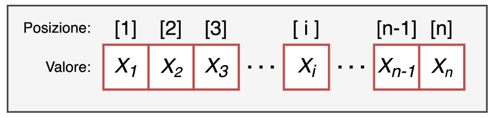

[1] 1 2 3 4[1] 1 2 3 4vectors
factors
lists
matrices
arrays
dataframes
Vectors are a one-dimensional data structure and are the simplest one in R.

length: the number of elements the vector is made of
type: the type of data the vector is made of. A vector must in fact be made of elements all of the same type!
a value: the value of the element, which can be of any type, for example a number or a string of characters
a position index: a positive integer that identifies its position within the vector.
Vectors can be created with the c() command, writing inside the brackets the values of the elements in the desired order, separated by commas.
[1] 1 2 3 4[1] 1 2 3 4The type of data the vector is made of.
A vector must be made of elements all of the same type!
[1] "character"[1] "1" "2" "3" "don't know" "4" Otherwise you “risk” everything being converted to character.
We can test or convert (when possible) the type of a vector with the is. & as. functions
A numeric vector
A logical vector
[1] 1 0 1Each element of a vector can be given a name.
Every object is characterized by a dimension (dim()); however, since a vector is one-dimensional, we use the length() command to get the length of the vector
We can select, remove and extract elements simply by using the position index inside square brackets vector[pos] .
[1] 47 42 91 15 74 98 88 13 55 15In the same way, we can extract all the elements of the vector except some
If we assign names to the elements of the vector, we can index them by “calling them by name” (less common)
[1] "a" "b" "c" "d" "e" "f" "g" "h" "i" "j"We can select elements of a vector based on specific logical conditions: TRUE and FALSE. The idea is that if we have a vector of length n and another logical vector of length n, all the TRUE elements will be selected:
[1] 3 4It doesn’t only work for the elements of the numbers vector, but for any vector!
[1] "c" "d"With the which() function we can get the positions associated with a logical selection:
Example:
[1] 1 30 30 26 35 7 37 23 36 31What is the difference between these 2 commands?
Indexing can also be useful to assign a value to a given element of the vector:
I replace the NA value with the missing letter
[1] FALSE FALSE FALSE FALSE FALSE FALSE FALSE TRUE FALSEWe can perform operations on vectors, applying the same operation to all the elements of the vector (element-wise)
The most common operations are, for example, the mean mean(), the standard deviation sd(), the median median(), the maximum max() and minimum min() values.
[1] 0.8745842[1] 3.940867[1] 0.8438001 Min. 1st Qu. Median Mean 3rd Qu. Max.
-10.7889 -1.6843 0.8438 0.8746 3.5015 12.8939 You can also use the describe function from the psych package:
Sometimes (very often) we may have missing data
Another common operation performed on vectors (and on other data structures) is counting frequencies
[1] "R" "R" "R" "ok"char_vect
ok R
1 3 [1] "r" "R" "R" "ok"char_vect
ok r R
1 1 2
Open this link and keep it open: